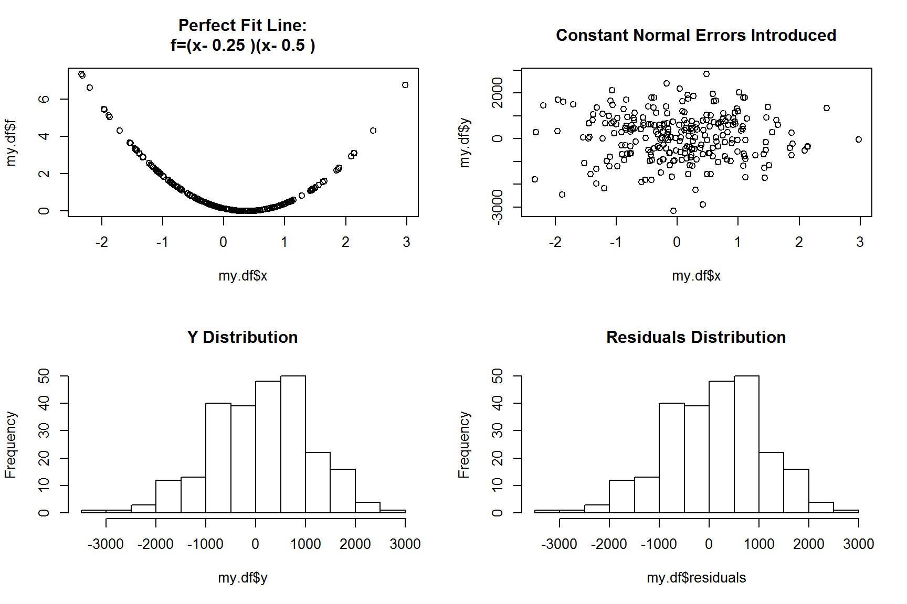
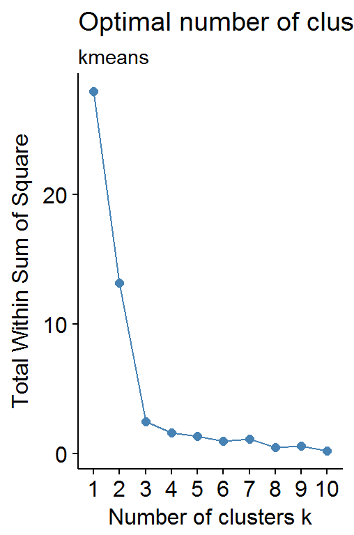
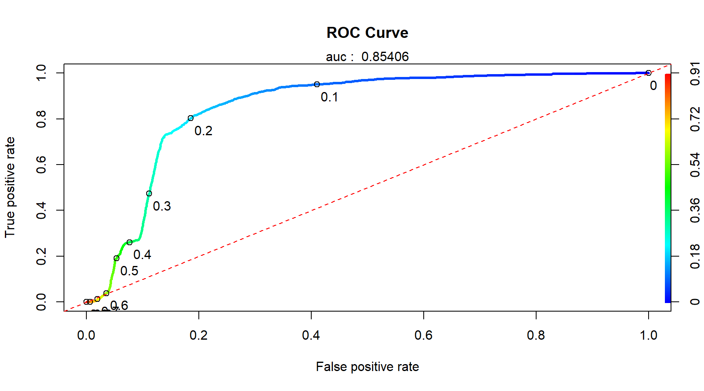
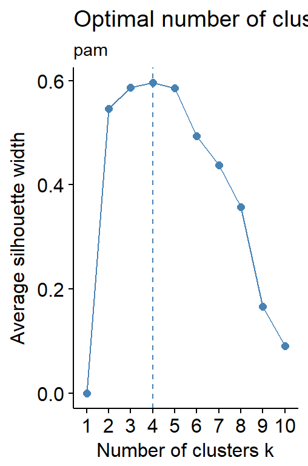
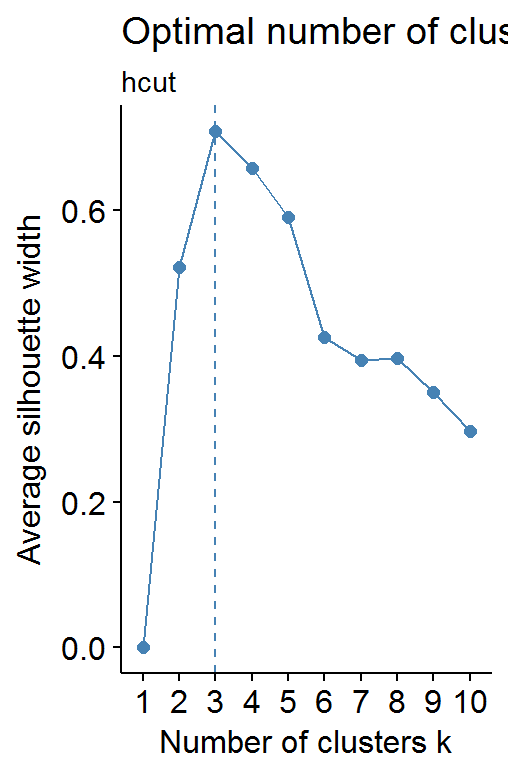
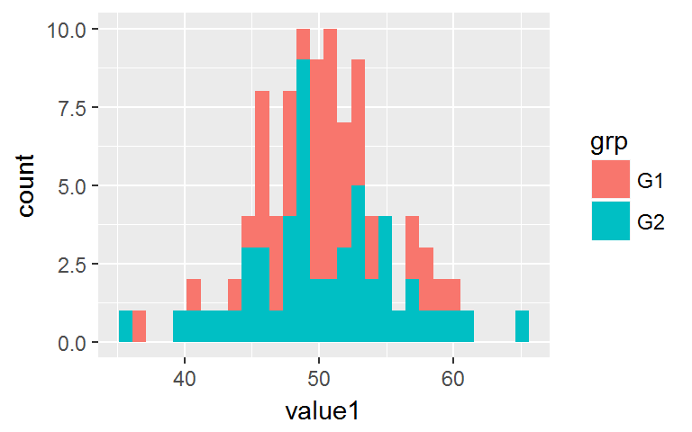
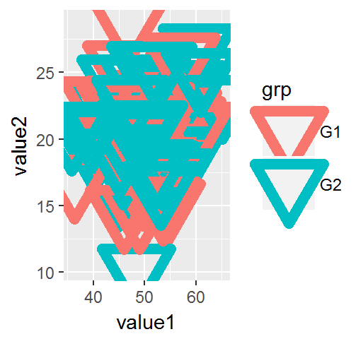
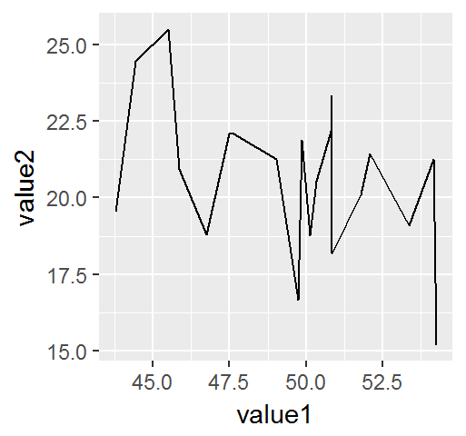
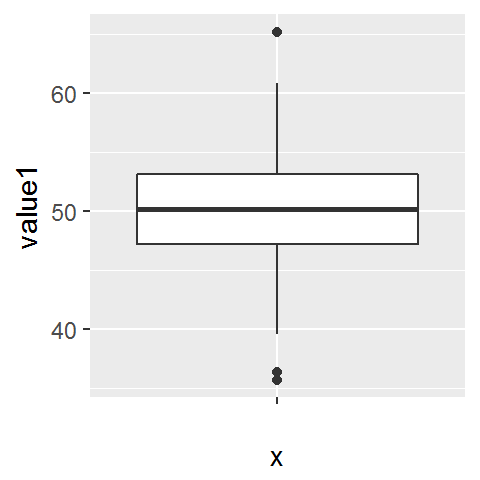

9.6 Optimum Number of Clusters (K)
There are three (3) popular methods for determining the optimal number of clusters.
Elbow Method Applicable for partioning clustering, such as k-means
Average Silhoutte Method
Gap Statistics (not discussed here)
There is no guarantee that they will agree with each other. In fact, they probably won’t. However, use this as a guidine and test few highest criteria score to determinee final number of cluster.
9.6.1 Elbow Method
9.6.1.1 Elbow Concept
The objective of partitioning clustering (such as K-Mean) is to define clusters such that the total intra-cluster variation (known as total within-cluster variation or total within-cluster sum of square, wss) is minimized.
9.6.1.2 Elbow Algorithm
- Run K-mean clustering algorithm for K=1 to n
- For each K, calculate the within-cluster-sum-of-square (wss)
- Plot the curve of wss against the number of clusters K
- The location of bend (knee) in the plot is generally considered as the indicator of the appropriate number of clusters
When the WSS value stop decreasing significantly (at the knee), then the number of clusters probably had reached its optimum. Although this approach is heuristic, it still provide a good guideline for K selection.
9.6.1.3 Elbow Codes (for K-mean) - Do It Yourself!
The method presented here does not require any external library ! However, it requires writing a funciton to calculate WSS and plot the results.
Define the The Algorithmn
# Algorithmn: Compute k-means and plot wss for k=2 to k=15
wssplot = function(data, nc=15, seed=1234){
wss <- (nrow(data)-1)*sum(apply(data,2,var))
for (i in 2:nc) {
set.seed(seed)
wss[i] <- sum(kmeans(data, centers=i)$withinss)
}
plot(1:nc, wss, type="b",
xlab="Number of Clusters (K)",
ylab="Total Within Groups Sum of Squares")
wss
}Run The Code
If number of observations <=nc(default 15), specify smaller nc.
wssplot(data.scaled, nc=8)
## [1] 22.0000000 9.0972442 3.7457815 1.2113566 1.1329538 0.4484420
## [7] 0.3547838 0.3325691
abline(v=3, lty=2) # mark the optimum K after facts 
The wssplot above indicates that there is a distinct drop in the within-groups sum of squares when moving from 1 to 3 clusters. After three clusters, this decrease drops off, suggestign that a three-cluster solution may be a good fit to the data.
9.6.1.4 Elbow Codes - using factoextra::fviz_nbclust,hcut
factoextracombined functions to calculate ‘silhoutte’ and outputggplotobject
- For k-mean wss analysis,
kmeanshelper function from base-R is required
- For pam wss analysis,
cluster:pamhelper function is required
- For h-cluster wss analysis,
hcuthelper function by its own library is used. Somehow base-Rhclustis not supproted
library(factoextra)
library(cluster)
fviz_nbclust(data.scaled, kmeans, method = "wss") + labs(subtitle='kmeans')
fviz_nbclust(data.scaled, pam, method = "wss") + labs(subtitle='pam')
fviz_nbclust(data.scaled, hcut, method = "wss") + labs(subtitle='hcut') +
geom_vline(xintercept = 3, linetype = 2)

9.6.2 Average Silhoutte Method
9.6.2.1 Average Silhoutte Concept
Average silhouette method computes the average silhouette of observations for different values of k. The optimal number of clusters k is the one that maximize the average silhouette over a range of possible values for k (Kaufman and Rousseeuw [1990]).
Silhouette analysis can be used to study the separation distance between the resulting clusters. The silhouette plot displays a measure of how close each point in one cluster is to points in the neighboring clusters and thus provides a way to assess parameters like number of clusters visually. This measure has a range of [-1, 1].
Silhouette coefficients (as these values are referred to as) near +1 indicate that the sample is far away from the neighboring clusters. A value of 0 indicates that the sample is on or very close to the decision boundary between two neighboring clusters and negative values indicate that those samples might have been assigned to the wrong cluster.
9.6.2.2 Average Silhoutte Algorithm
- Compute clustering algorithm (e.g., k-means clustering) for different values of k
- For each k, calculate the average silhouette of observations (avg.sil)
- Plot the curve of avg.sil according to the number of clusters k
- The location of the maximum is considered as the appropriate number of clusters
9.6.2.3 Average Silhoutte Code - factoextra:fviz_nbclust
Example code below shows silhoute analysis for kmeans, pam and h-cluster:
factoextracombined functions to calculate ‘silhoutte’ and output ggplot object
- For k-mean silhoutte analysis,
kmeanshelper function from base-R is required
- For pam silhoutte analysis,
cluster:pamhelper function is required
- For h-cluster silhoutte analysis,
hcuthelper function by its own library is used. Somehow base-Rhclustis not supproted
library(factoextra)
library(cluster)
fviz_nbclust(data.scaled, kmeans, method = "silhouette") + labs(subtitle='kmeans')
fviz_nbclust(data.scaled, pam, method = "silhouette") + labs(subtitle='pam')
fviz_nbclust(data.scaled, hcut, method = "silhouette") + labs(subtitle='hcut')
9.6.3 NbClust Package (with 30 Indices)
NbClust package offers numerous 26 indices for determining the best number of clusters in a cluster analysis.
library('NbClust')- Multiple indices are computed simultaneously - a clear advantage
- Paramter
index='all'will utilize all indices to evaluate the optimum number of clusters
Nbclustreturns a list that contains all evaluation statistic based on the indices used
- Results of the evaluation is stored in
Best.ncvector
- Using
tableandbarplotis best way to visualize the result of best K
Supported Indices are
- kl, ch, hartigan, ccc, scott, marriot, trcovw, tracew, friedman, rubin, cindex, db, silhouette, duda, pseudot2, beale, ratkowsky, ball, ptbiserial, gap, frey, mcclain, gamma, gplus, tau, dunn, hubert, sdindex, dindex, sdbw
- ‘all’ (all indices except GAP, Gamma, Gplus and Tau)
- ‘alllong’ (all indices with Gap, Gamma, Gplus and Tau included)
NbClust( data=, diss=NULL, distance='euclidean', min.nc=2, max.nc=15,
method=NULL, index='all', alphaBeale=0.1)
\(\quad\)data = matrix or dataframe
\(\quad\)diss = dissimilarity matrix, if not NULL, then distance should be NULL
\(\quad\)distance = "euclidean", "maximum", "manhattan", "canberra", "binary", "minkowski" or "NULL"
\(\quad\)min.nc = minimum number of clusters
\(\quad\)max.nc = maximum number of clusters
\(\quad\)method = "ward.D", "ward.D2", "single", "complete", "average", "mcquitty", "median", "centroid", "kmeans"
\(\quad\)index = 'all' to use all indices for evaluation
NbClust output an object with below values:
Best.nc: Best number of clusters proposed by each index and the corresponding index value
Best.partition: vector of cluster group for every observation
9.6.3.1 Run The Code
Run NbClust for average (h-clustering) and kmeans method.
nbc.hclust = NbClust(data.scaled, distance="euclidean", min.nc=2, max.nc=8, method="average")
nbc.kmeans = NbClust(data.scaled, min.nc=2, max.nc=8, method="kmeans")9.6.3.2 Visualize The Result
Visualize using Base-R
As output Best.nc[1,] shows, majority indices favor three (3) clusters.
table( nbc.hclust$Best.n[1,] )
##
## 0 1 2 3 5 6 8
## 2 1 2 10 4 1 6
barplot( table(nbc.hclust$Best.n[1,] ),
xlab="Numer of Clusters", ylab="Number of Criteria",
main="Number of Clusters Chosen by 26 Criteria\nh-cluster")
table( nbc.kmeans$Best.nc[1,] )
##
## 0 1 2 3 4 5 6 7 8
## 2 1 4 5 3 6 3 1 1
barplot( table(nbc.kmeans$Best.nc[1,] ),
xlab="Numer of Clusters", ylab="Number of Criteria",
main="Number of Clusters Chosen by 26 Criteria\nkmeans")
Visualize using factoextra::fviz_nbclust()
Single function fviz_nbclust() from factoextra library will use value in NbClust object to visualize the optimal cluster number. fviz_nbclus output ggplot object, hence can be easily customized.
library('factoextra')
fviz_nbclust(nbc.hclust) + labs(subtitle='H-Cluster')
fviz_nbclust(nbc.kmeans) + labs(subtitle='K-Means')